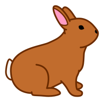

Cursul ScratchJr
10 lecții cu ScratchJr
Puzzle-uri de programare cu ținte clare, soluții construite de copii și timp pentru proiecte proprii. Refacem lecțiile pe rând, într-un format mai provocator.
- 6–7 ani
- 60 min / format nou
- O tabletă pentru fiecare copil
Înainte de curs · laptop și proiector
Lecția 0 · Picnicul întrerupt de ploaie
O poveste în patru scene ScratchJr: ocolim gardul, culegem mere, îi poftim pe prieteni la masă și îi adăpostim de ploaie. Adunăm și scădem pentru a afla câte mere mai culegem, pe cine mai servim și cine mai are nevoie de adăpost. Cinci exerciții de rezervă. Copiii propun codul și vin pe rând la laptop.
Proiectul ScratchJr și ghidul →
Alege lecția
Planul întregului curs · text- Lecția 01 · Nou · 60 min
Cursa cu ștafetă
Mingea trece vizibil de la A la B. Mesajele coordonează predarea, ocolul gardului și sosirea.
Deschide lecția 1 →Creația mea: Traseul echipei mele.
- Lecția 02 · Nou · 60 min
Muzeul după închidere
Exponate care se animă, încremenesc la inspecție și repornesc după întoarcerea paznicului.
Deschide lecția 2 →Creația mea: Muzeul meu.
- Lecția 03 · Nou · 60 min
Autobuzul spre plajă
Toți urcă înainte de plecare. Schimbăm scena și coborâm numai după oprire.
Deschide lecția 3 →Creația mea: Excursia mea.
- Lecția 04 · Nou · 60 min
Repetiția pentru spectacol
Ritmuri finite, artiști pe rând și două runde dirijate. Finalul vine după ultima intervenție.
Deschide lecția 4Creația mea: Spectacolul meu.
- Lecția 05
Fabrica de ritmuri
Construim coduri sonore cu Pop, pauze și repetiții. Ascultăm și recunoaștem tipare.
Deschide lecția 5 →Creația mea: Semnătura mea sonoră.
- Lecția 06
Parcul cu surprize
Contactul pornește o reacție. Creăm întâlniri, comori și un lanț de surprize.
Deschide lecția 6 →Creația mea: Surpriza întâlnirii.
- Lecția 07
Povestea cu două finaluri
Adăugăm pagini, două alegeri și drumuri de întoarcere. Copilul decide cum continuă povestea.
Deschide lecția 7 →Creația mea: Două alegeri care spun o poveste.
- Lecția 08
Statuile fermecate
Pornim o rutină continuă și o înghețăm. Controlăm artiștii separat și împreună.
Deschide lecția 8 →Creația mea: Coregrafia mea.
- Lecția 09
Insula misterioasă
O descoperire o deschide pe următoarea. Fiecare copil construiește și testează propriul joc.
Deschide lecția 9 →Creația mea: Secretul insulei mele.
- Lecția 10
Marea finală
Continuăm insula: artiști pe rând și întoarcere la final. Un joc complet, gata de rejucat.
Deschide lecția 10 →Creația mea: Finalul pe care îl semnez eu.
Pentru profesor · Cum folosim materialele?
Pentru lecțiile refăcute, folosește planul concis de 60 de minute: obiectiv, misiuni, creație proprie, soluții și două rezerve. Ghidurile lungi, cartonașele și pachetele ZIP etichetate ca arhivă aparțin versiunilor anterioare de 50 de minute.
Copiii construiesc în aplicația ScratchJr de pe tabletă. În lecția 10 continuă proiectul salvat la lecția 9. Înainte de clasă, verifică pe un Lenovo pornirea, atingerea, salvarea și redeschiderea.